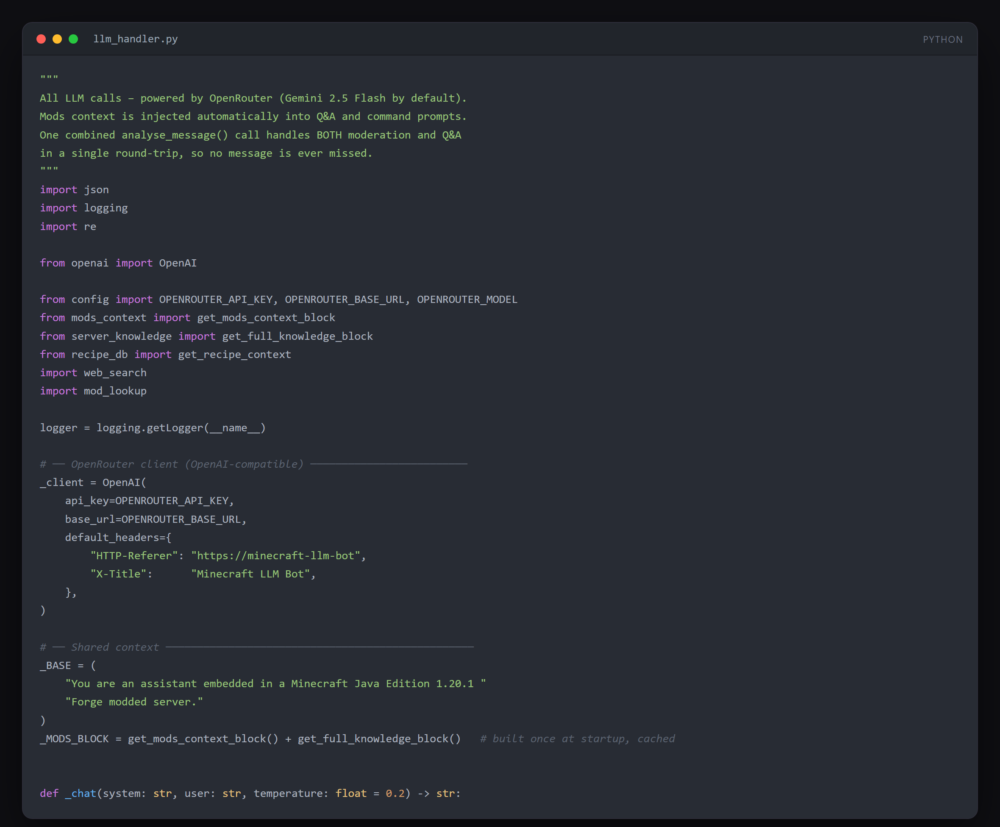

The LLM handler that turns plain English into server commands.
Overview
An LLM connected to a Minecraft server over RCON. It moderates chat, answers player questions in-game, and turns operator instructions written in plain English into the right server commands.
Commands are never executed blind: the model proposes the command, the operator confirms it, and only then does it run. A raw prefix bypasses the model entirely when you already know the exact syntax.
What it does
- Chat moderation: every message is analysed, with escalation from warning to kick to ban
- Players ask questions with ?bot and get an in-game reply
- Natural language to server command, with an explicit confirmation step before execution
- !raw prefix to send a command directly, bypassing the model
- RCON connection to a standard Minecraft server
- Provider switchable between OpenRouter and a local Ollama model
Architecture
flowchart LR
A["Minecraft server"] -->|chat events| B["Bot listener"]
B --> C["LLM<br/>OpenRouter / Ollama"]
C --> D{"Intent"}
D -->|bad language| E["Warn / kick / ban"]
D -->|question| F["In-game answer"]
G["Operator CLI<br/>plain English"] --> C
C --> H["Proposed command<br/>awaiting confirmation"]
H -->|confirmed| I["RCON execute"]
E --> I
F --> I
Diagram drawn from the actual codebase.